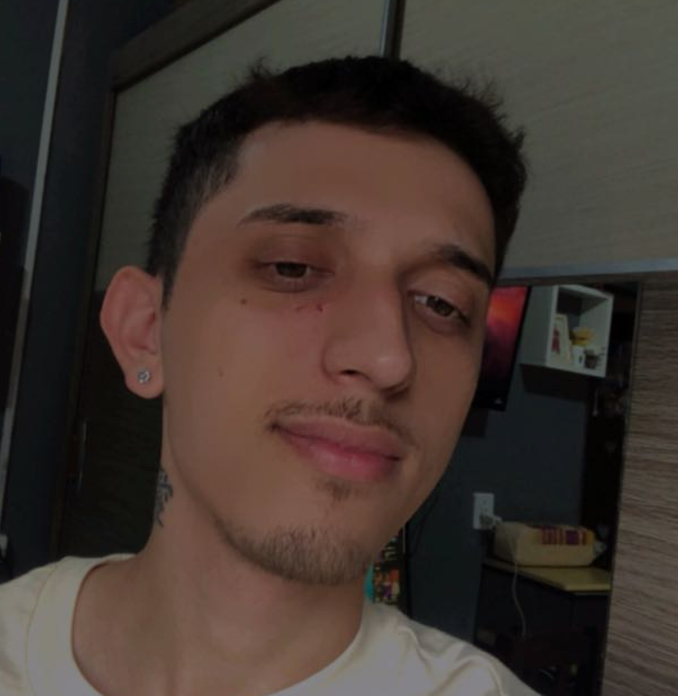
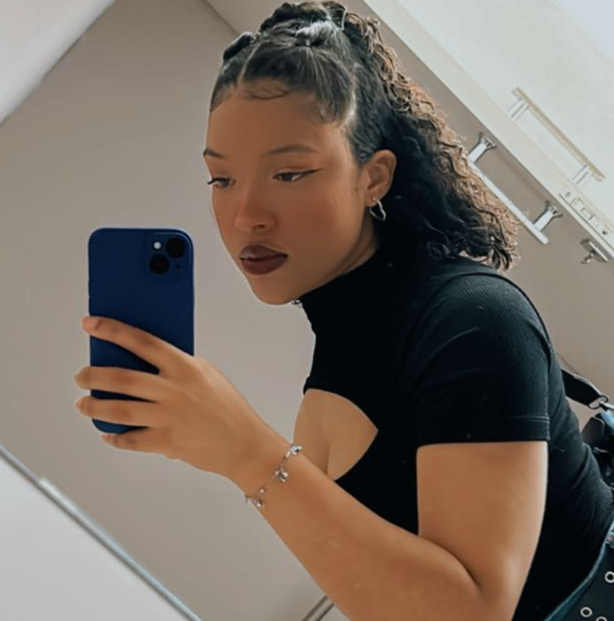

Klaiver Rodrigues, candidato a representante da turma de Análise e Desenvolvimento de Sistemas,
propõe criar grupos de estudo, incentivar a participação em eventos de tecnologia e promover
workshops práticos. Ele busca aproximar os alunos do mercado de trabalho com parcerias para estágios
e projetos reais. Além disso, Klaiver se compromete a cobrar dos professores melhorias no ensino,
garantindo que as necessidades e desafios dos estudantes sejam atendidos.
👋 Olá, pessoal! Me chamo Ezequiel Luiz da Silva, estudante de Análise e Desenvolvimento de Sistemas,
e estou aqui para me candidatar como o próximo representante da nossa turma. Se você quer alguém que
combine inteligência, carisma e competência, não precisa procurar mais: eu sou esse cara! 😎

Gustavo Schomberger é representante da turma de Análise e Desenvolvimento de Sistemas, sempre disposto
a ajudar seus colegas com projetos e atividades. Ele acredita que a união da turma é a chave para superar
desafios e alcançar grandes resultados.

Ágata Cardoso é uma estudante focada e dedicada. Ela acredita que a comunicação aberta com os alunos e
professores é essencial para garantir que todos tenham uma experiência acadêmica significativa. Ágata
também quer organizar mais eventos de integração e projetos interdisciplinares.